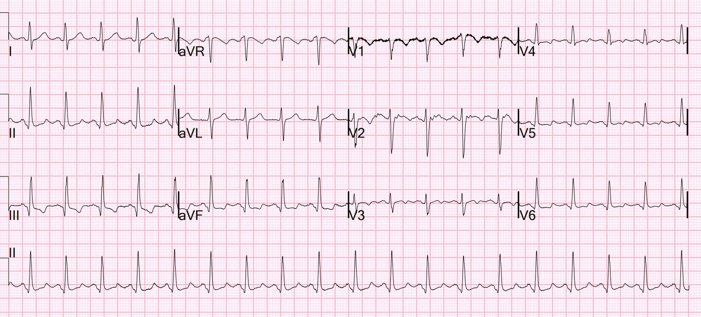
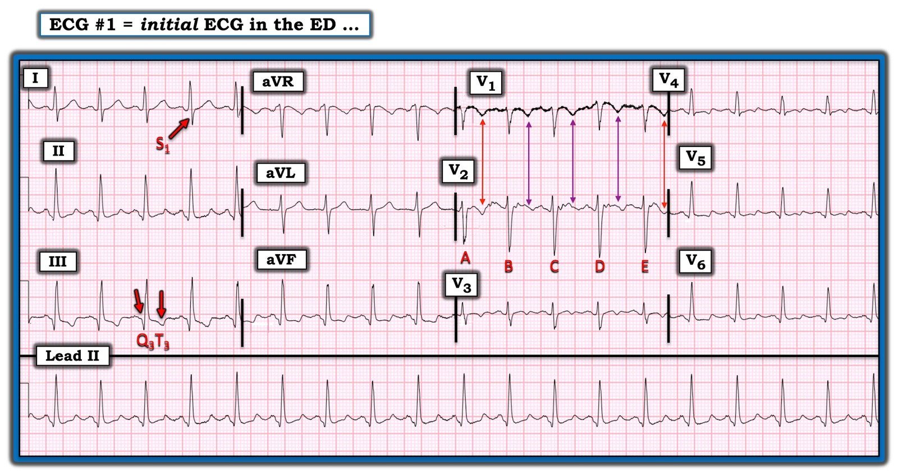

04/03/2023 — Một người ngoài 30 tuổi bị đau ngực và khó thở
Bản dịch tiếng Việt của bài "A 30-something with Chest pain and SOB" – Dr. Smith’s ECG Blog. Giữ nguyên toàn bộ 4 hình ảnh của bản gốc.
Một người ngoài 30 tuổi có tiền sử đái tháo đường (DM) và tăng huyết áp (HTN) đến viện vì đau ngực, khó thở (SOB) và ho.


Điện tâm đồ này khá kinh điển cho thuyên tắc phổi, và quả thực đây là một ca PE cấp mức độ lớn.
Đây là một hình ảnh S1Q3T3 kinh điển. Phần lớn các trường hợp S1Q3T3 không phải do PE. Trường hợp này đặc hiệu hơn nhiều, vì nó đi kèm với nhịp nhanh xoang và một số sóng T đảo ngược ở V1-V3. Vì vậy toàn bộ điện tâm đồ này cho xác suất rất cao là PE ở một bệnh nhân khó thở cấp.
Sóng T đảo ngược ở các chuyển đạo trước có thể là Wellens. Đây KHÔNG phải Wellens vì sóng T đảo ngược xuất hiện TRONG LÚC đau (không phải sau cơn đau — Wellens là một hội chứng sóng T đảo ngược (TWI) xuất hiện sau khi một cơn đau thắt ngực đã hết). HƠN NỮA, hình thái của TWI ở đây đơn giản là không phù hợp với ACS.
Dấu hiệu S1Q3T3
Đây là một bài báo đáng đọc: Marchik và cs. đã nghiên cứu các dấu hiệu điện tâm đồ của PE ở 6049 bệnh nhân có biểu hiện lâm sàng nghi ngờ PE, trong đó 354 người bị PE. Họ thấy rằng S1Q3T3 có tỷ số khả dĩ dương (positive likelihood ratio) là 3.7; sóng T đảo ngược ở V1 và V2 là 1.8; sóng T đảo ngược ở V1-V3 là 2.6; sóng T đảo ngược ở V1-V4 là 3.7; blốc nhánh phải không hoàn toàn (IRBBB) là 1.7 và nhịp nhanh là 1.8. Cuối cùng, họ thấy rằng S1Q3T3, sóng T đảo ngược ở các chuyển đạo trước tim V1-V4 và nhịp nhanh là các yếu tố tiên đoán độc lập của PE.
S1Q3T3 là gì? Rất ít nghiên cứu định nghĩa S1Q3T3. Dấu hiệu này đã được mô tả từ tận năm 1935 và cả S1 lẫn Q3 đều được định nghĩa là 1.5 mm (0.15 mV). Trong bài báo của Marchik (giả sử họ định nghĩa theo cùng cách đó, vì phần phương pháp không nêu rõ điều này), trong số các bệnh nhân nghi ngờ PE, S1Q3T3 được ghi nhận ở 8.5% bệnh nhân có PE và 3.3% bệnh nhân không có PE.
Thêm về điện tâm đồ trong thuyên tắc phổi:
Điện tâm đồ của bệnh nhân này có cả sóng T đảo ngược ở các chuyển đạo trước tim LẪN sóng T đảo ngược ở chuyển đạo III. Điều này rất gợi ý thuyên tắc phổi.
Kosuge và cs. đã chỉ ra rằng, khi sóng T đảo ngược ở các chuyển đạo trước tim, nếu chúng cũng đảo ngược ở chuyển đạo III và V1 thì thuyên tắc phổi có khả năng cao hơn nhiều so với ACS. Trong nghiên cứu này, (trích dẫn) “sóng T âm ở chuyển đạo III và V1 chỉ được ghi nhận ở 1% bệnh nhân ACS so với 88% bệnh nhân thuyên tắc phổi cấp (APE) (p nhỏ hơn 0.001). Độ nhạy, độ đặc hiệu, giá trị tiên đoán dương và giá trị tiên đoán âm của dấu hiệu này trong chẩn đoán PE lần lượt là 88%, 99%, 97% và 95%. Tóm lại, sự hiện diện của sóng T âm ở cả hai chuyển đạo III và V1 cho phép phân biệt PE với ACS một cách đơn giản nhưng chính xác ở những bệnh nhân có sóng T âm ở các chuyển đạo trước tim.”
Xem bài này để biết thêm chi tiết về điện tâm đồ trong thuyên tắc phổi.
Còn nhiều ca khác nữa ở đây.

==================================
BÌNH LUẬN CỦA TÔI, bởi KEN GRAUER, MD (4/3/2023):
==================================
Điện tâm đồ tốt đến mức nào trong chẩn đoán PE cấp? Câu trả lời là — còn tùy! Đôi khi điện tâm đồ rất xuất sắc, ở chỗ nó ngay lập tức cho bạn biết “xác suất cao là PE cấp diện rộng”. Những lúc khác — điện tâm đồ ban đầu có thể đủ gợi ý để bắt buộc phải làm thêm xét nghiệm ngay (tức là siêu âm tim tại giường; CT ngực) — dù bản thân nó không mang tính chẩn đoán. Và rồi có những lúc điện tâm đồ đáng thất vọng khi không khẳng định mà cũng chẳng loại trừ được một PE cấp có ý nghĩa.
- Tôi hoàn toàn đồng ý với Dr. Smith rằng điện tâm đồ ban đầu hôm nay đang nói: “Hãy xử trí tôi như một PE cấp cho đến khi bạn chứng minh được điều ngược lại!” Dù vậy — để phục vụ bàn luận, tôi muốn tập trung vào một vài điểm bổ sung về ca hôm nay. Để rõ ràng, trong Hình 1 — tôi đã sao lại và đánh dấu một số nhát bóp từ điện tâm đồ ban đầu.


Chẩn đoán PE cấp trên điện tâm đồ như thế nào?
Như chúng tôi đã bàn luận nhiều lần trên Dr. Smith’s ECG Blog (xem Bình luận của tôi trong bài ngày 28 tháng Ba năm 2022 trên Dr. Smith’s ECG Blog, cùng nhiều bài khác) — không có một dấu hiệu điện tâm đồ đơn lẻ nào mang tính chẩn đoán PE cấp. Thay vào đó, chẩn đoán PE cấp có thể được gợi ý khi có ít nhất vài dấu hiệu điện tâm đồ nêu trong Hình 2 — NẾU vài dấu hiệu này xuất hiện trong bối cảnh lâm sàng “phù hợp“ (tức là kèm khó thở cấp phù hợp với PE cấp).
- Như Dr. Smith đã nêu — điện tâm đồ ban đầu hôm nay rõ ràng thỏa mãn các tiêu chuẩn trên vì: i) Bệnh nhân đến viện vì khó thở cấp; và, ii) Điện tâm đồ #1 cho thấy vài dấu hiệu điện tâm đồ được liệt kê trong Hình 2 (tức là nhịp nhanh xoang, S1Q3T3, và thay đổi sóng ST-T ở các chuyển đạo dưới và chuyển đạo trước phù hợp với “tăng gánh” thất phải ).
- Dù tôi vẫn còn những thắc mắc về ca này do thông tin được cung cấp còn hạn chế (tức là Đau ngực ở người trẻ tuổi mắc đái tháo đường này có phải do PE cấp không? Điện tâm đồ có từng được ghi lại không? Troponin huyết thanh?) — Điều cần nhấn mạnh là bệnh sử hôm nay và điện tâm đồ ban đầu này bắt buộc phải làm xét nghiệm theo dõi ngay lập tức (tức là siêu âm tim tại giường có thể xác nhận tức thì nghi ngờ PE cấp của chúng ta).
CÁC ĐIỂM BỔ SUNG:
- Theo kinh nghiệm của tôi — tôi đã thấy nhiều bác sĩ lâm sàng đánh đồng dấu hiệu “S1Q3T3” với sự hiện diện của 2 bất kỳ (nhưng không phải cả 3) trong các thành phần này. Để dấu hiệu điện tâm đồ này có giá trị — cả 3 thành phần của dấu hiệu S1Q3T3 phải có mặt (như chúng hiện diện rõ ràng trong Hình 1).
- Sự hiện diện của RBBB hoàn toàn hoặc không hoàn toàn tự động tạo ra S1 — và thường cả T3. Do đó — tôi nghi ngờ giá trị của dấu hiệu S1Q3T3 như một chỉ điểm của PE cấp ở những bệnh nhân có sẵn bất thường dẫn truyền kiểu RBBB từ trước.
- Sự hiện diện của dấu hiệu S1Q3T3 khi không có bệnh sử thuyết phục và ít nhất một vài dấu hiệu điện tâm đồ nêu trong Hình 2 — thì không nhạy mà cũng không đặc hiệu cho PE cấp. Trong những năm tôi đọc tất cả các bản ghi tại một trung tâm chăm sóc ngoại trú cho 35 nhân viên y tế — thỉnh thoảng tôi vẫn thấy S1Q3T3 đơn độc ở những bệnh nhân ổn định, không khó thở cấp (và rõ ràng không có PE cấp).
- “Tăng gánh” thất phải cấp có hiện diện trên điện tâm đồ #1. Dù vậy — khi mới nhìn bản ghi hôm nay, tôi nghĩ có quá nhiều nhiễu ở chuyển đạo V2 để nhận ra “tăng gánh” thất phải thực sự. Đó là vì “mắt” tôi tập trung vào sóng ST-T ở các phức bộ B, C và D trong Hình 1 — nơi đường nền hoàn toàn thất thường và phần T đảo ngược mà ta thấy không thẳng hàng với sóng T đảo ngược thấy rõ ở chuyển đạo V1 (Lưu ý sự không khớp ở cặp mũi tên TÍM trong Hình 1).
- Ở những chỗ khác trong các chuyển đạo ngực — sóng T đảo ngược mà ta thấy ở chuyển đạo V3 thì nông — và thay vì đảo ngược rõ ràng, sóng T lại hai pha (âm rồi dương) ở các chuyển đạo V4,V5,V6.
- Nơi khác cần tìm “tăng gánh” thất phải là các chuyển đạo dưới. Dù sóng T có đảo ngược ở chuyển đạo III — nó lại không đảo ngược ở chuyển đạo II, và ở chuyển đạo aVF nó cho thấy hình ảnh sóng T hai pha tương tự như đã thấy ở các chuyển đạo ngực bên.
- ĐIỀU CỐT LÕI: Có những bất thường sóng ST-T rõ ràng ở nhiều chuyển đạo trên điện tâm đồ #1 — nhưng ban đầu tôi không tin chắc rằng hình ảnh sóng ST-T này đặc hiệu cho “tăng gánh” thất phải.
Rồi tôi xem kỹ hơn:
- Dù có quá nhiều nhiễu để đánh giá chính xác bản chất thay đổi sóng ST-T của các phức bộ B, C và D ở chuyển đạo V2 — các phức bộ A và E ở chuyển đạo V2 thực sự cho thấy sóng T đảo ngược sâu có thẳng hàng với sóng T đảo ngược sâu mà ta thấy ở chuyển đạo V1 (như cặp mũi tên ĐỎ trong Hình 1 cho thấy). Vì “tăng gánh” thất phải điển hình nhất là rõ rệt nhất ở các chuyển đạo trước V1,V2,V3 — hình ảnh sóng T mà ta thấy ở các phức bộ A và E ở chuyển đạo V2 rõ ràng gợi ý “tăng gánh” thất phải cấp.
- XIN NHẤN MẠNH: Lý do tôi coi trọng việc sóng ST-T ở chuyển đạo V2 thực sự trông như thế nào — là vì ngoài nhịp nhanh xoang và dấu hiệu S1Q3T3 — không dấu hiệu điện tâm đồ nào khác được liệt kê trong Hình 2 sẽ hiện diện nếu tất cả những gì ta có chỉ là các bất thường sóng ST-T không đặc hiệu. Thay vào đó — ta thực sự có “tăng gánh” thất phải cấp + nhịp nhanh xoang + S1Q3T3 ở một bệnh nhân khó thở mới xuất hiện = PE cấp cho đến khi chứng minh được điều ngược lại!
- T.B. (P.S.): Tôi sẽ ghi lại ngay điện tâm đồ ban đầu (chú ý bảo đảm điện cực V1,V2 tiếp xúc da đầy đủ — vì đây thực sự là những chuyển đạo duy nhất có nhiễu đáng kể trên bản ghi hôm nay). Tôi cá rằng một điện tâm đồ ghi lại sẽ cho chẩn đoán “tăng gánh” thất phải cấp rõ ràng hơn nhiều (và do đó cả PE cấp).